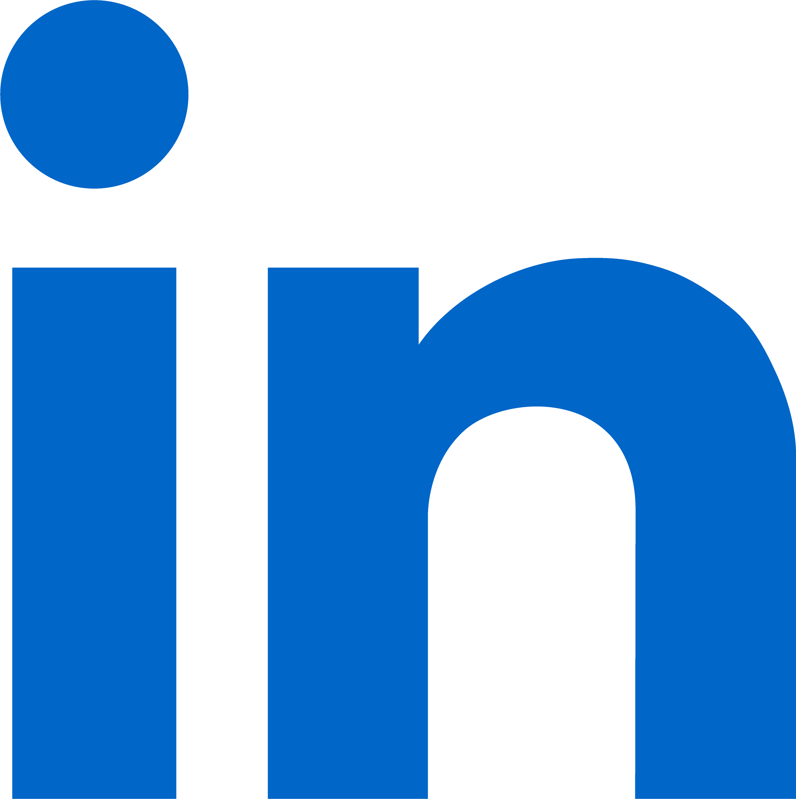
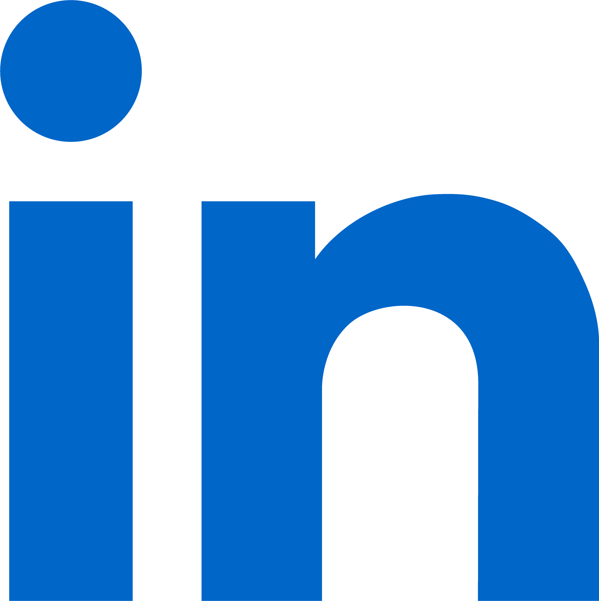

Nawaf Mohammed Ibrahim


 

Software Engineer
Amin possesses excellent communication skills and a strong work ethic. He can convey complex ideas
clearly and adapt his communication style to different audiences. Amin is also a skilled problem
solver,
consistently delivering high-quality results and exceeding expectations.
Furthermore, Amin is a collaborative team member who fosters a positive work environment. He is
organized,
reliable, and remains calm under pressure. I have no doubt that Amin will excel in any future role.
Anmar Hani

Software Engineer
I've seen Amin's adeptness with Linux, both in command line and OS, and his ability to write
clean code.
We've collaborated on a Human-Computer Interaction project, where his strong English skills and
innovative
ideas were invaluable.
Amin's commitment to learning is commendable. He enrolled in AI courses, demonstrating his
eagerness to
expand his knowledge. His passion for computer science and software engineering is clear, and I
believe he
will be a valuable addition to any team.
Sameer Ahmad Awaji
Software Engineer
I have had the pleasure of collaborating with Amin on several university projects, including our
final software engineering project. Amin excels in team organization, displaying strong leadership
skills and the ability to foster cooperation. He consistently upholds high ethical standards and is
known for his strong work ethic. Amin's technical proficiency and dedication to his work make him a
valuable asset to any team.
Carlos do Valle
Mechatronics Engineer
I've had the privilege of working closely with Amin remotely on various mechatronic and software
engineering projects, including Discord bots. Despite the distance, Amin's exceptional skills and
dedication have made our collaboration seamless and highly productive. I appreciate his remote
collaboration style and, given the choice, I would prefer working with him over anyone else, even in
person. Amin's expertise and commitment are truly unmatched.